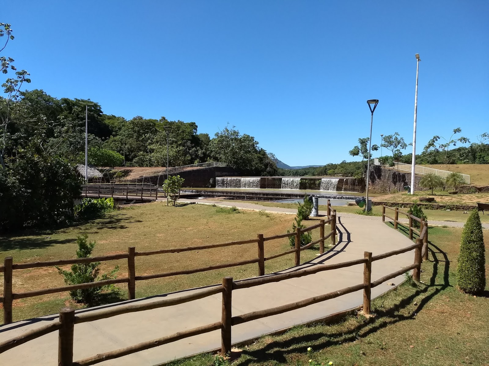
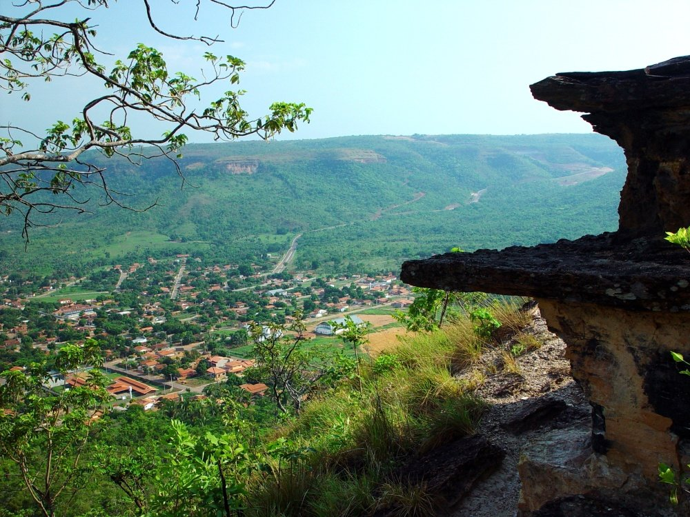
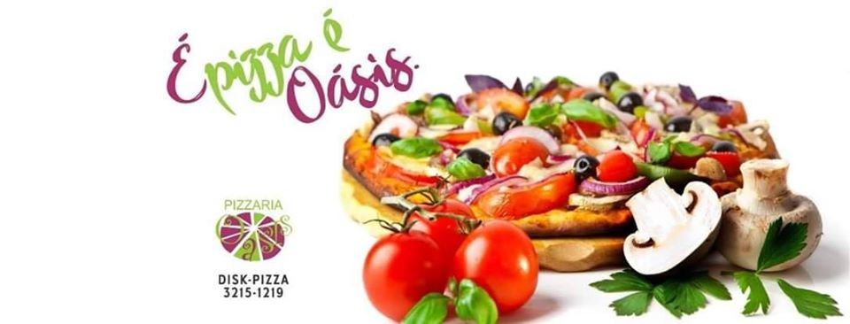
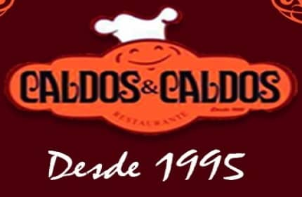
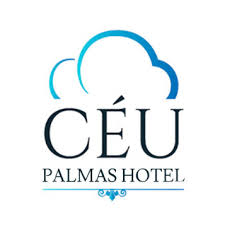
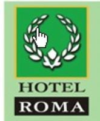
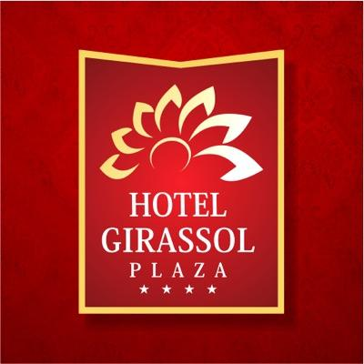

Palmas a capital mais nova de todos os estados do Brasil fica feliz em receber tods voçês visitantes para conhecer um pouco sobre essa cidade.
Temos lazer, comidas tipicas e lugares exelente para se hospedarem para um descanso, não deixe de curtir bastante a cidade de palmas.
Somente anos depois, com o desmembramento do estado do Tocantins do estado de Goiás pela Constituição de 1988, é que Palmas finalmente começou a surgir. No dia 10 de janeiro de 1989, a cidade de Miracema do Tocantins foi definida como capital provisória do estado.[11] No dia 15 de fevereiro de 1989, a Assembleia autorizou o então governador Siqueira Campos a desapropriar a área da Serra do Carmo e a leste do povoado de Canela para a criação da nova capital do estado idealizada pelo então governador da época.
No dia 6 de março do mesmo ano, por decreto, foi criada a Comissão de Implantação da Nova Capital (Novacap) e, no dia 20 de maio de 1989, foi lançada a pedra fundamental da cidade, numa solenidade que reuniu cerca de dez mil pessoas na Praça dos Girassóis. No mesmo dia, o governador Siqueira Campos acionou o trator, abrindo a avenida Teotônio Segurado, a primeira via arterial da cidade. Grande parte do município foi construído por trabalhadores oriundos de várias localidades do Brasil.
Sobre a Cidade
Planejada para ser a capital do Tocantins, Palmas foi criada em 20 de maio de 1989 (pouco tempo depois da criação do Estado) e instalada em 1º de janeiro de 1990, após a transferência da capital provisória, Miracema.
O primeiro passo para o planejamento da capital definitiva foi dado logo após a eleição do governador Siqueira Campos, em 15 de novembro de 1988, que solicitou levantamento para definir a localização de uma cidade que lhe possibilitasse ser um pólo de irradiação de desenvolvimento econômico e social do Estado. O resultado do estudo determinou uma área localizada entre os municípios de Porto Nacional e Taquaruçu do Porto, a leste do povoado do Canela.
A instalação de Palmas só foi possível com a transferência da sede administrativa do município de Taquaruçu para Palmas, tornando o prefeito eleito de Taquaruçu, Fenelon Barbosa, o primeiro prefeito de Palmas. Com esta decisão, Taquaruçu do Porto transformou-se em Distrito de Palmas, assim como Taquaralto e Canela.
O nome de Palmas foi escolhido em homenagem à comarca de São João da Palma, sede do primeiro movimento separatista do norte goiano, e também pela grande quantidade de palmeiras na região.
temos muitos lugares para se encantar com a cidade, lugares para você e sua familha se divertir.
como exemplo o parque cesamar localizado na região central de palmas, onde é possivel fazer uma caminhada,fazer um lanche ou um pequenique.

temos tambem taquaruçu um local de cachoeiras, rapeis e tirolesa. Para você que gosta de aventura esse é o local idael.

Para voçê que gosta de uma boa comida, temos os melhores lugraes para você e sua familha, como restalrantes, pizzarias, caldos, entre outro lugares agradaveis.


Estes são alguns dos hoteis da mais nova capital pra você poder descansar depois de um dia intenso de conhecimento da cidade de palmas, não deixe de conferir.
temos outras opçoes de hospedagem que não consta em nosso catalogo, então aproveite bastante a cidade de palmas.



Contatos
Precisando anuciar o seu estabelecimento, entre em contato conosco. teremos o prazer em lhes atender.